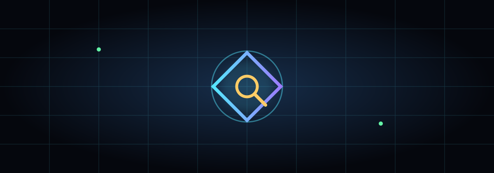

Public by design
Redacted rows, visible uncertainty, and no click-through access.
FED-SPA Signal Atlas turns public-record observations into a clear, animated, offline-friendly map. It shows names, categories, and statuses only—never a working destination.

Redacted rows, visible uncertainty, and no click-through access.
Procedural glow, orbiting nodes, scanlines, and playful comic visuals make the surface feel alive.
Relative paths work on GitHub Pages project sites and Cloudflare Pages without a special URL.